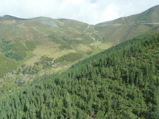
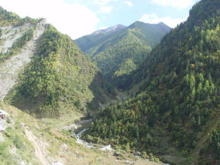
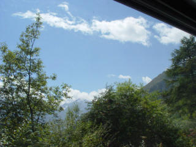
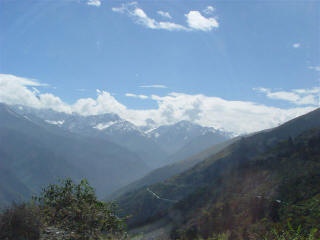
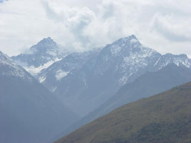
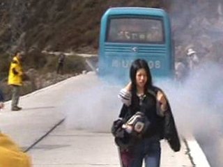
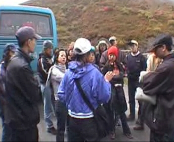
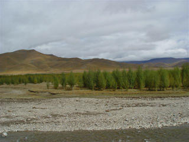

{kind=link}
{kind=link}
{kind=link}
{kind=link}
{kind=link}
{kind=link}
{kind=link}
{kind=link}
{kind=link}


文：卞卡 图：王建硕
29日一早来到成都的省体育馆，找到我们的团队。上车的时候其他的团友基本上都已到齐，除了一个坐在最后排的年领稍大，其他的看上去都很年轻。加上我们是19人，后来大家都成了很好的旅行伙伴。
早上八点，我们的旅途开始了。女导游叫郭雪佳，听起来有点好玩。不过当她开口解说的时候，就更好玩了。不知是因为紧张还是不熟练，一段话被讲得结结巴巴断断续续，第一印象真不怎么样！
   
稻城县位于四川甘孜藏族自治州南部，掩映在层层高山之中。从成都出发后，经过都江堰、沿岷江水系逆流而上，没过多久就进入了甘孜地区，我们开始在群山峡谷间行进。
刚开始爬的第一座高山，海拔就过了4000米。原先还很担心自己能不能适应，后来发现坐在车子里没有太明显的感觉，于是就放心了一些。车子停在路上休整的时候下车走了几步，觉得胸口很闷，像在水里的感觉，喘气有点困难，多走几步，就感到不行了。女团友落叶红为了躲避汽车的尾气猛跑了几步，突然就瘫在了地上，导游赶紧给她吸了几口氧。从此大家开始知道，也开始慢慢感觉到高原反应的“威力”。

##中午在一个小村子吃饭。暖暖的阳光打在我们脸上，空气开始微冷，这里比平原有了更深的秋意。午饭虽然不是很丰盛，但大家都觉得很好吃，特别是蔬菜，一上桌就被抢空了。路的另一边，几位藏族老大妈摆了地摊，卖烤玉米、纪念品、高原药材等。至今后悔那天没有买一条织锦的彩带，后来一路上就没有再遇上了。
车子停下来加油的时候，正好在一个半山腰上。远看是一条美丽的山谷，有蜿蜒流过的小河、错落的人家、成片的冷杉林和放牧的姑娘。阳光很好，使得眼前的一切都清晰明亮起来，心情也随之轻快。于是给家里和几个朋友打了电话，把自己的欣喜传递给他们。
第一天的行程是绕过四姑娘山，到达新都桥。由于交通管制，第一天走的是北线，比通常选择的南线多了100多公里，到达被称作“摄影天堂”的新都桥时，已经是晚上9点多了。
不过一路上翻越了好几座海拔4000以上的高山，眼前的美景是我们这些来自海边的人们所没有见过的。天边一道连绵的雪山，在阳光下闪烁着光芒，天空蓝地不可思议，高山草甸和溪流不时地在身边掠过，还有藏族姑娘们美丽而又没完没了的笑脸。
第二天离开新都桥的时候，两边的山上是绚丽的彩林，导游说这里的彩林比九寨沟的还要美。可惜车子在路上抛了锚，一停就是两三个小时。
不过我们找到了一个守林人的小屋，慷慨好客的男主人给我们喝酥油茶吃糌粑。酥油茶甜甜咸咸地，含在嘴里润滑无比，咽下去一直暖到心里。糌粑入口有独特的口感，尽管不是太好吃，可是还是觉得很有新鲜感。
修好车子的时候，已经是中午了。为了车子抛锚的事情大家还和导游吵了一架，不过从此以后，这辆车就再没出现过问题，大家都觉得有点奇迹。

#这天翻越了海拔4702米的剪子湾山，晚上6点多来到著名的世界高城理塘。远远地在山上，就看到镇上的霓虹广告牌了，让我们这些看了两天青山绿水的城里人有了一点“雁归来”的感觉。导游说理塘有一间很著名的喇嘛庙，叫长青春科尔寺，有高僧活佛，还经常办法事。这不，这几天就在搞一个大型的法事，谢绝游客参观，我们只好抱憾而归。
在青藏高原最大的古冰体遗迹海子山下，我们吃到了鲜美的高山无磷雪鱼。听说这种鱼只能生活在纯净的雪水里，是从海子山上的海子里捕获的，所以售价可不便宜。不过说句心里话，不知是烹调地不好还是怎么了，我就是觉得没有家乡的海鱼好吃。不过能在那样的地方吃到这等鲜味，我们都觉得很幸福了。
吃完鱼出来，已是满天繁星。夜空仿佛离我们很近很近，又深邃得让人的视线没有了焦点。想起大学里一位教授向我们描述过的西藏的天空，应该就是这样的吧。夜里到达稻城县城，已经是1点多了，我们住在当地藏民的家里。这里海拔3700米，高原反应让我头疼欲裂，坐在床上，扑鼻而来的是酥油茶酸酸的味道，更让我觉得窒息。于是吃了一颗百服宁，赶紧上床休息了。 
第三天早上醒来，头疼已经缓解了很多，人了精神了不少。离开稻城县前往主景区亚丁村的时候，看到了傍河壮观的十里白桦林。在这个深秋的早晨，金黄色的白桦林还带有一丝嫩绿，在河滩上舒展开来，衬托着蜿蜒的清澈溪流和远处青褐色的山梁，纯净美丽地像一幅娟秀的工笔画。还有淡淡的晨雾缱绻着美丽的彩林，山谷之间裸露的层积岩和大片的冷杉林留下了远古的印记，不时可见的马尼堆和经幡述说着藏人虔诚的信仰。
看着这些仿若从远古走来的景致，惬意间想起一段席慕容的诗：
最起初/只有那一轮山月/和极冷极暗记忆里的洞穴/然后你微笑着向我走来/在清凉的早上 浮云散开/既然我该循路前去迎你/请让我们在水草丰美的地方定居/我会学着在甲骨上卜凶吉/并且把爱与信仰 都烧进/有着水纹云纹的彩陶里/那时候/所有的故事都开始在一条芳香的河边/涉江而过 芙蓉千朵/诗也简单 心也简单。
Buy XenicalBuy Xanax Buy Phentermine mp3 players Buy Phentermine mp3 player Buy Cheap Phentermine Penis Enlargement Cialis Buy Cialis
{kind=link}
{kind=link}
{kind=link}